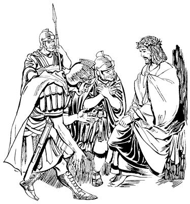
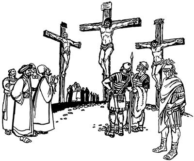
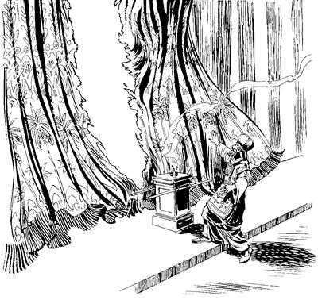

Yesus salero mog so'o saelba uhiropne Pilatusag pabieka
(Matius 27:1-2,11-26; Lukas 23:1-5, 13-25; Yohanes 18:28--19:16)
15
1 Kwelekaogpa lukunap memnang Allah sembe pairop nang sikindoyaboap, Yahudi nimi sikiniri wenehirop nangap, Musa yubu mome ambatsirop nangap, ora nimi nubungeri Yahudi nimi sembe tam lelekto kemeropnangap sin ni tanekori “Huaukap,” aro yubu lelamek. Yubu lelamekti, “Yesus haing sae kaupto mog so'o aneag saelba uhiropne Pilatusa saeag poa pukap,” aro yubu saekag lebekti, Yesus haing sae kaupto Pilatus saeag tarel piek.2 Pabiekpa, Pilatus ponekori Yesusag hailamogti, “An sik Yahudi nimi sembe yubu sia leropne nubunge, te?” seog.
Wene seogpa, Yesusti, “Yo, otsik leplam,” seog.
3 Wene seogpa, memnang Allah sembe pairop nang sikini yabo tanekori Yesus sembe “Malinge undo-undo ulamo,” aro lolorop yubu Pilatusag ambarelamek. 4 Ambarekpa, Pilatusti Yesusag nen hailamogti, “Andi yubu samoro ambatsululam kom, te? Kembamen! Andi malia uaomne nanag ambatneangne maiknori,” seog.
5 Wene aro haibaog aghana, Yesusti nen samoro yubu olog lebog kom. Yubu olog lebog komba Pilatusti, “Sa'a sembe peleptangtop yubu olog lepla kombae?” aro yaghe sembaog.
6 Wamek sumeneko Yahudi nimi sembe nubu sum Paskah yanuaog. Pilatus ponekori sop-sop ulamognena, Paskah sum talamogpa, Yahudi nimi haing sae kaupto kop aeag tobongolamsiog nimi agha Pilatus ponekori “Yahudi nimiri molona molbaneikne sunsunum uro nimi nhonog lambitnun,” aro ulamog. 7 Haing sae kaupto tobongkipsiek nimi taneko wameknena, Yahudi nimi nenneri seneraglamekti, “Roma nimiri nu saelbamsiangne karongdi, mo seksebe,” aro ulamek. “Mo seksebe,” aro ulamek nimi nenneri nimi ya'ag opsiekpa, Roma nimiri haing sae kaupto saelbamsiekti, kop aeag tobongkipsiek. Sin kop aeag tobongkipsiek nimi agha nimi ohiropne nhon si Barabas wamog. 8 Wamogpa, Yahudi nimi maikno tanekori Pilatusag yaekti, “Hengkun samenag ulamom saog uro sumene babe nimi nhon sae lobitlulam,” aro molona mololaek.
9-10 Wene aro molbaekpa, Pilatus ponekori el wamogti, “Memnang Allah sembe pairopnang sikiniyabori, ‘Yesus si nubunge taleag,’ aro wana mali senelamangdi, salero nanag poa yaang,” aro Pilatus ponekori el wamog. Ane sembe Pilatusti nimi maikno tanekoag hailamsiogti, “A'undi nanag mololamnelomne, Yesus ponekona nimiri, ‘Yahudi nimi saelba uhiropne' aro engeropne pone agha sae lobitnun tanena, a'un Yahudi nimi yeng te?” seog.
11 Wene “Yesus sae lobitnun,” aro haibahiog aghana, memnang Allah sembe pairop nang sikindo yabo tanekori wanaag nonogtop yubu lebek. Wanaag nonogtop yubu lelamekti, nimi maikno wana tolamsiekneag agha nimi maikno tanekori, “Barabas agha sae lobitlulam,” alamek.
12 Wene alamekpa Pilatusti, “Wene alamlom tanena, a'un Yahudi nimiri elag, ‘Saelbamsululam,’ aro lebomne pone Yesusag huanun?” seog.
13 Wene seogpa, nimi taneko yubu mikip uro lelamekti, “Yesus kalag siplobe!” alamek.
14 Wene alamekpa, Pilatus ponekori nen hailamsiogti, “Wene alamlom aghana sa'a sembe? Nimi eneri malinge huropne uaoba, kalag sipto omnun?” aro haibahiog.
Wene aro haibahiog aghana, sindi yubu nen nubu nenero haum aro lelamekti, “Kalag siplobe!” seek. 15 “Kalag siplobe!” aro haum alamekpa, Pilatus ponekori nimi maikno taneko “Wana yeng nembahinun,” aro sindi molbaekne sunsunum uro Barabas agha sae loplobog. Barabas agha sae loplobogti, “Yesus taeplam-taeplamlopmundi, kalag sipto oplulom!” aro Pilatusti yin saleropnangdi saeag nembaog.
Yin saleropnangdi Yesus yubu neplameka
(Matius 27:27-31; Yohanes 19:2-3)
16 Yin saleropnangdi saeag nembaogpa, taeplam-taeplamlobekdi, mog so'o saelba uhiropne ae nubunge aramag Yesus pabiek. Pabiekti, sikinkabo yin saleropnang yogne yopsiekpa, ni longol aek. 17 Longoptaekti, “Yubu nebukap,” aro ag uwongne nimi nubunangdi enektop ag Yesus nongag wangkirek. Elag wangkirekti, alog aba agha mog so'o saelba uhiropnang usoghag kwiria elektoba saogne wibekti, yubu nepto usoghag nobek. 18 Uwong ag elag wangkirekti, alog aba nobekti, yubu nepto lelamekti, “Nuni! Yahudi nimi saelbamsilamne,” aro yubu neplamek. 19 Yubu neplamekti, Yesus usoghag kameri olamekti, silu mag suplamek. Silu mag suplamekti, nimi nubunge kiploa saog uro yabu sanukto pulingkina yubu neplamek. 20 Yubu neplamekti, “Abenda. Pukap,” sembaekti uwong ag nongag enektoba wangkirekne neneko el nongag agha kuribaekti, el samenag wangaro amogne wangkirek. Wangkirekti, “Yesus kalag sipto olobukap,” aro poa lambaek.

Yesus kalag sipto olobeka
(Matius 27:32-44; Lukas 23:26-43; Yohanes 19:17-27)
21 “Yesus kalag sipto obukap,” aro inaag poa palamekti, yin saleropnang tanekori nimi nhonag, “Yesus sipnep kal ane poplulam,” aro pobirek. Sindi elag pobirek nimi eneko sina Simon, Aleksanderap Rufusap sikini ponekoag kal pobirek. Simon pone as Kirene agha yalamogpa yobekti, “Kal ane poplulam,” aro yubu mikip uro arukaek. 22 Pobirekpa palamekti, Yesus mog so'o nhon sina Golgota mainag pabiek. Golgota aneko Yahudi nimiri lelamek yubuag, “Nimi usog ya'ol,” aro main ane si Golgota aro engero yabiog. 23 Golgota mainag poa piekti, Yesusag mag anggur lolterop maghap, uwong mag mur arop maghap ma'abaekti, elag tebarek. Mag tareknena, “Mag ane teleba, og seklelamlange olog keyagman talul,” aro tebarek aghana, Yesusti mag ten koma lipsiog. 24 Mag lipsiogpa, ag nongag wangkamogne kwiriplobekti, kal tam alikinag siptoba, pakuri Yesus sae yan kalag siplobek. Siplobek nimi tanekori, “Yesusti nongag wangarop ag pogtaberi, kekneba toboghabeba, po'obale nimi enekori toro alul,” aro kekneba toboglamek. 25 Yesus kalag pakuri siplobeknena, ae lukun heng ko'o supnangeag agha kalag siplobek.
26 Kalag sibekti, Roma nimiri, “Nimi ane kalag sipto obapnena tamna nene sembe,” aro mome toro pibek. Mome toro pibeknena:
“Nimi ane Yahudi nimi sembe yubu sia lero saelbamsilne”
aro mome toro pibekti, Yesus kalag sibek kal anekoag pibek.
27 Yesus kalag siplobekag nimi phende babe yoaba ulamdek nimi pabihiekti, Yesus sae sirik sip nhon, waneng sip nhon kalag siplopsiek.
28 Samenag anam kalag siplopsin komag Allahri yubu silimu tiptop nimiri uro yabinepne sembe mome tolamogti, “Yoaba urop nimiag ulamsiangne saog uro elag babe uaukang,” aro mome toro pibog. Elap yoaba urop nimiap ma'aro siplopsinepne sembe samenag mome toro pibogne sunsunum uro uro yabiog.
29-30 Kal sibeka peram toman palamek nimi taneko ngang kwa'arom-kwa'aroma Yesus san tiliplamekti, “Eh, andi samen yubu lelamomdi, ‘Allahri Mem Ae nubunge kwereklopseneri, nen ik wilindiog agha wendogne sobahane,’ seom. An sik uro mikip tanena, kalag agha kulukamendi, wali neneptalulam!” aro yubu nepto san tilibaek.

31 Yubu nepto san tiliplamekpa, memnang Allah sembe pairopnang sikindoyaboap, Musari samenag mome toro pibogne ambatsiropnangap tanekori babe Yesus yubu nepto sin mamun lelamek. Yubu nepto lelamekti, “Nimi orange wali nenelamsio aghana, eldamne wali neneptanep kom. 32 El neneko sik uro Allahri webogti, ‘Israel nimi taluro saelbamsilul,’ aro poghogne Kristus wamso tanena, hae kal aniag agha kulukaho. Kulukaho andarina ipseberi, wali elag sik sembahabe,” aro yubu neplamek. Yubu nepto san tiplamekpa, elap nikag kalag sipto opsiek nimi phende abenekori babe Yesus san tilipto yubu neplamdek.
Yesus tebaogha
(Matius 27:45-46; Lukas 23:44-49; Yohanes 19:28-30)
33 Yesus kalag sibekpa, wamogpa, heng ik mol-mol seogti, siro turu alamog abeneko heng sanubom seogti, ae iniplobog. Ae iniplobogpa, wamek mog so'o eneko ni iniplobogha heng ko'o wilindi piog. Heng ko'o wilindi palamogha, kekman heng taolbaogti, ae sin taog. 34 Ae sin taogpa, Yesusti Yahudi nimiri yubuag yubu haum aro lelamogti, “Eloi! Eloi, lama sabakhtani?” seog. Seogne anena nuri yubuag, “Nani Allah! Nani Allah, sa'a sembe andi na laploamnelam?” aro lebog.
35 Wene seogpa, nimi etpare taneko wamek nimiri ka'ebom agha seneraghek komdi, “Ka'ebahut! Eldi Allah yubu silimu tiptopne Elia pone yoplamla,” seek.
36 Wene seekti, nimi nhondi elem-elem noghom-nesom saogne tol piogti, anggur lolterop maghag werebi agha kalag kolnoro, “Yesus mag yori mag telul,” aro towalengero Yesus pamag pibog. Towalengero pibogti, yubu lelamogti, “Olog mo wamleba, ta'abameberi kembamukap. Allah yubu silimu tiptopne Elia samenag wamogne poneko yaleri, kalag ania toro pelengkalul to, kom to?” seog.
37 Wene seogpa, Yesus yubu haum aro lelamogti hain kom taog.
38 Yesus tebaog sumeneko Allahri Mem Ae lomag “Mem usa ae lom aneag nimi wa'aukang kom,” aro ag wilnirop ag nubunge ina siramag siliplengkibekne wamog. Yesus teplamogti hain kom taongom alamog abeneko pere, ae lom wilnirop ag siliplengeroba pukama aneko tai siba serero tau sip payangkaogti, phende taog.

39 Yesus hain kom taog sumeneko, yin saleropnang sikindo nhon Yesus whingag sekamogti ni kembamog. Yesusti yubu mikip uro haum aro lelamogti, hain kom taongom alamogne ibogti, yin saleropnang sikindo ponekori, “Otsik, nimi ene Allah Elme,” seog.
40 Yesus hain kom taongom alamogpa, kelabo etbare weag agha sekamekti tibogamek. Kelabo tibogamek kelabo taneko anabiag agha wameknena:
Maria Magdala kelenekoap
Salome kelenekoap
Yakobus amik mangkaekne ponekoap ilipsae Yosesap sikinin Maria kelenekoap
Kelabo tanekori Yesus tebaogne weag agha tibogamek.
41 Kelabo tanekona, samen Yesus mog so'o Galilea wamogpa, kelabo tanekori “Yesusag teko ualeag,” aro yepto neleplamek. Yesus as Yerusalem palamogpa, kelabo tanekoap yog kelabo maiknoap abenekori Galilea mog so'o laplobi agha elag nelepto as Yerusalem yingkiekti, weag agha hain kom taongom alamogha tibogamek.
Yusupti Yesus kirik lomag pibogha
(Matius 27:57-61; Lukas 23:50-56; Yohanes 19:38-42)
42-43 Tebaog sumeneko Yahudi nimi niri, “Iniplogleba ik nhon sum ningki tek-tek papto wameberi, Allah yubu lebukap,” aro menekna togtop sum wamek. Nimi nhon sina Yusup, as Arimateange ponekori Yesus tebaogne sembe el taog. Yusup Arimateange pone el babe Yahudi nimi sembe tam lelekto kemerop nimi Mahkamah Agama nimi agha nubunge wamog. Yusup ponekori Allah sembe yeng senelamogti, “Allahri nimi mog so'oag nimi saelbamsilulne imnun,” aro nang-nang alamog. Undo unulamogha Yesus tebaogne sembe el taogti, inipna peram taogpa, Yusup ponekori, “Yesus tebaogha o'obanun,” aro Pilatusag piogti, log kom uro “Yesus tebaogha aneko pabinun,” aro molol piog.
44 Wene aro molbaogpa, “Yesus tebal,” seogha ka'ebaogti, Pilatus ponekori, “Weneog kalag sibang aghana, el elem phea abene tebal, te?” aro lo'om seog. Lo'om seogti, “Yin saleropnang sikindo enel pululom,” aro nimi pogsiogpa, enel piekti payaek. Payekpa Pilatus ponekori yin saleropnang sikindo ponekoag, “Yesus usaap ya'ag tebal, te?” aro haibaog.
45 Wene aro haibaogpa, yin saleropnang sikindo ponekori, “Sik uro ya'ag tebal,” seog. Seogpa, Pilatusti Yusupag, “Wali teptoba aneko tol pululam,” aro ambarog.
46 Wene aro ambarogpa, Yusupti ag sabonge walinge nimi teptopne kelepsirop ag kamna alikinag uro tobogti, Yesus kalag sipto obeka aneko toro pelengkia ag sabonge tobogha anekoag kelebaog. Kelebongkia kirik lom hogtobag pail piog. Kirik lom hogtobag pail piogti, ina siramag kirik nubunge agha pemagto ina siramag maruklobongkia piog. 47 Yesus kirik lom hogtobag pibogpa, Maria Magdala kelenekoap, Yoses ilin Mariaap abenekori Yesus kirik lomag palilamogha tibogamsirek.